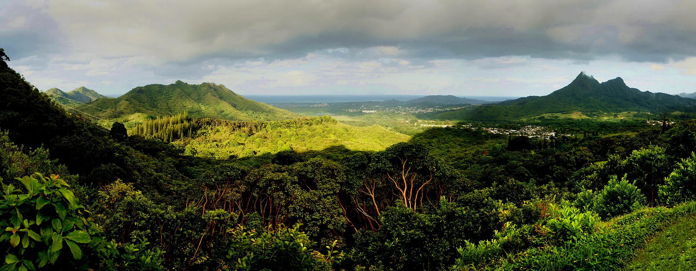

Molecular biodiversity monitoring
Applying DNA-based methods to document biodiversity across complex terrestrial communities and archived material.

Research
My research links field ecology with molecular biodiversity tools. I use DNA-based methods not as a replacement for natural history, but as a way to extend what field biologists can detect, compare, and reconstruct.
Nuʻuanu Pali, Oʻahu · Photo by Bernard Spragg.NZ / Wikimedia Commons (CC0)
Applying DNA-based methods to document biodiversity across complex terrestrial communities and archived material.
Investigating biodiversity patterns in island systems shaped by isolation, dispersal, invasion, adaptation, and extinction.
Understanding how arthropod, fungal, and plant-associated communities vary across landscapes, habitats, islands, and time.
Developing molecular approaches that can support monitoring, early detection, and biodiversity assessment.
Publication and manuscript list from the October 2026 CV.
Citation counts are from OpenAlex. Journal impact factors use each paper’s publication year and link to their sources. 2026 journal impact factors are not yet available.
Banerjee, P., Al-Bayer, S., Calaor, J., , Graham, N. R., Andersen, J. C., Economo, E. P., Kennedy, S., Krehenwinkel, H., Gillespie, R. G., Roderick, G. K., Rogers, H. S., & Puliafico, K. P. (2026). Comparison of environmental DNA and bulk DNA metabarcoding for assessing terrestrial arthropod diversity across three habitat types on Guam. Molecular Ecology Resources, 26(5), e70172.
Pfau, M. J., , Kennedy, S., Krehenwinkel, H., Roderick, G., & Gillespie, R. (2025). Invasive Spiders and Their Microbiomes: Patterns of Microbial Variation in Native and Invasive Species in Hawai'i. Ecology and Evolution, 15(10), e72175.
Banerjee, P., Maity, J. P., Chatterjee, N., , Dey, G., Sharma, R. K., & Chen, C. Y. (2025). Harnessing Environmental DNA to Explore Frugivorous Interactions: A Case Study in Papaya (Carica papaya) and Pineapple (Ananas comosus). Environmental DNA, 7(5), e70196.
Junk, I., Hans, J., Perez-Lamarque, B., Stothut, M., , Gold, E., ... & Krehenwinkel, H. (2025). Archived natural DNA samplers reveal four decades of biodiversity change across the tree of life. Nature Ecology & Evolution, 9(10), 1873-1884.
Melcher, A. C., , Birkhofer, K., Harms, D., & Krehenwinkel, H. (2024). To pool or not to pool: pooled metabarcoding does not affect estimates of prey diversity in spider gut content analysis. Ecological Entomology, 49(6), 768-778.
Stothut, M., Mahla, L., Backes, L., , Avazzadeh, A., Moradmand, M., & Krehenwinkel, H. (2024). Recovering plant-associated arthropod communities by eDNA metabarcoding historical herbarium specimens. Current Biology, 34(18), 4318-4324.
Gajski, D., Wolff, J. O., Melcher, A., , Prost, S., Krehenwinkel, H., & Kennedy, S. R. (2024). Facilitating taxonomy and phylogenetics: An informative and cost-effective protocol integrating long amplicon PCRs and third-generation sequencing. Molecular Phylogenetics and Evolution, 192, 107988.
, Stothut, M., Mahla, L., Kripp, A., Hirschler, L., Lenz, N., ... & Krehenwinkel, H. (2024). Plant-derived environmental DNA complements diversity estimates from traditional arthropod monitoring methods but outperforms them detecting plant-arthropod interactions. Molecular Ecology Resources, 24(2), e13900.
, Junk, I., Brink, L., Wörner, M., Künzel, S., Veith, M., ... & Krehenwinkel, H. (2023). Molecular diet analysis in mussels and other metazoan filter feeders and an assessment of their utility as natural eDNA samplers. Molecular Ecology Resources, 23(2), 471-485.
Krehenwinkel, H., , Broekmann, R., Melcher, A., Hans, J., Wolf, R., ... & Veith, M. (2022). Environmental DNA from archived leaves reveals widespread temporal turnover and biotic homogenization in forest arthropod communities. eLife, 11, e78521.
Krehenwinkel, H., , Künzel, S., & Kennedy, S. R. (2022). The bug in a teacup-monitoring arthropod-plant associations with environmental DNA from dried plant material. Biology Letters, 18(6), 20220091.
Publication and manuscript list from the October 2026 CV.
Under review at Molecular Ecology Resources.
Under review at Conservation Biology. bioRxiv preprint.
Under review at Environmental DNA. bioRxiv preprint.
Under review at Molecular Ecology Resources. bioRxiv preprint.